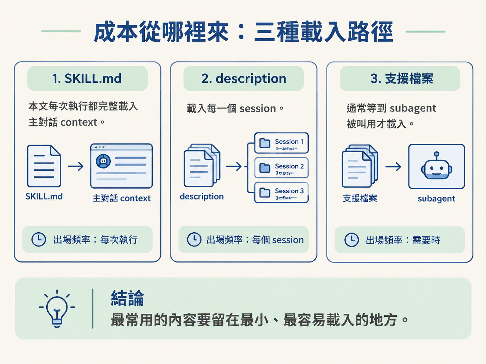
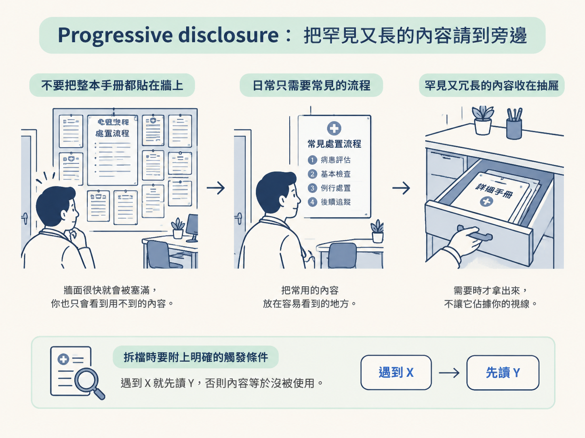
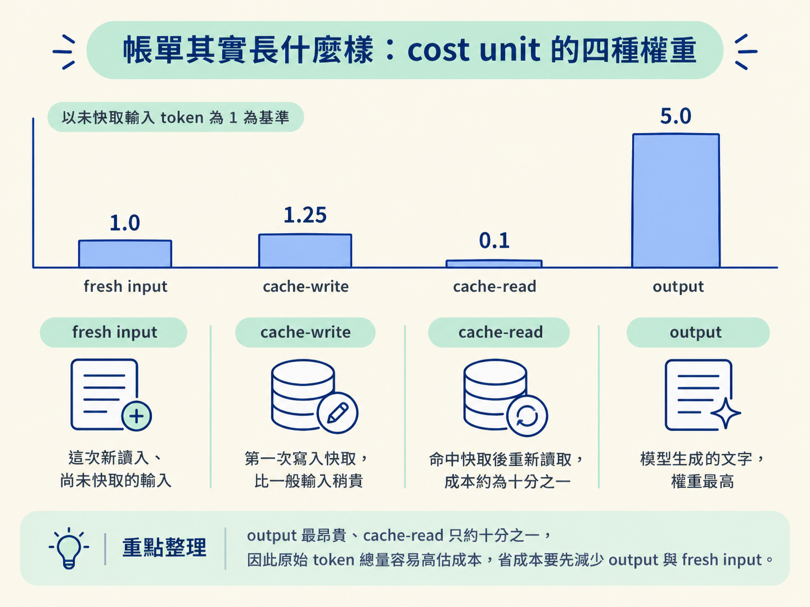
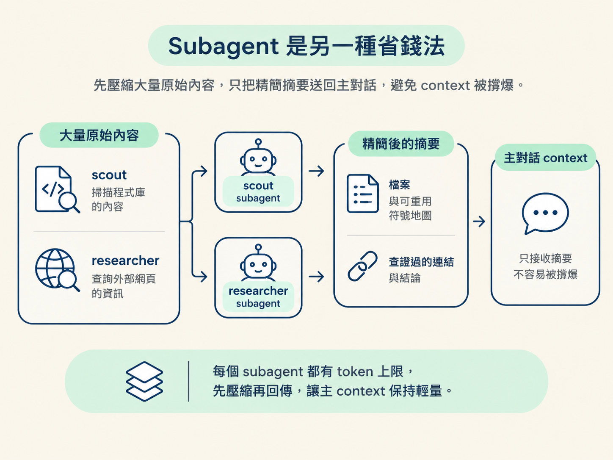

學完這一課，你應該能用「每次載入都要付成本」來解釋 progressive disclosure 與 token 預算，也能用 cost-unit 權重判斷：現在該先刪 output、減少 fresh input，還是縮小 resident 檔案。
上一課提到：「skill 要瘦，因為每一行都是成本。」這句話很容易被當成口號。畢竟現在的模型都有很大的 context window，多寫幾句應該沒關係吧？
關鍵在於「每次執行」這件事。你寫的規則是給 agent 讀的；每次 agent 執行這個 skill，都會重新讀取那份指令。今天多加的一句提醒，不是只付一次成本，而是往後每次執行都要付一次。
如果這句話沒有改變 agent 的行為，它就像一台穩定運轉的漏水水龍頭：持續消耗資源，卻沒有換來任何效果。要知道哪一句該留下、哪一段該拆出去，得先看懂這筆帳是怎麼算的。
Skill 的內容不是平均分攤成本，而是透過三條不同的路徑載入。三者的出場頻率不同，省成本的方法也不同。
第一條是 SKILL.md 的本文。只要這個 skill 被叫用，本文就會完整載入主對話的 context。這是每次執行都會支付的固定成本，也是 skill 需要優先瘦身的地方。
第二條是 frontmatter 裡的 description。它的出場頻率更高：每個已安裝的 skill，其描述都會載入每一個 session，不管該次 session 是否真的使用它。
因此，description 必須短。理由不是排版好看，而是它被讀取的次數最多。jsm-skills 將它的上限設為 400 個字元。
第三條是 skill 資料夾中的支援檔案，例如不同的 mode 或 guide。這些檔案通常等到 subagent 被叫用時，才會載入 subagent 的 context。它們不會拖累主對話的每次執行，但檔案本身仍然需要控制大小。
把三條路徑放在一起看，就能理解專案為什麼要求：最常用的內容留在最小、最容易載入的地方。

在 skill 設計裡，progressive disclosure（漸進式揭露）不是抽象口號，而是一個很具體的拆檔規則：
只有「不常用」而且「內容很長」的資訊，才值得移到另一個檔案，等需要時再讀；短的或常用的內容，則留在入口檔案。
可以把它想成醫師的診間。牆上貼的是每天都會用到的常見症狀處置流程，抬頭就能看到。罕見病例的詳細手冊則收在抽屜裡，遇到對應的病人才拿出來查。
如果把整本手冊都貼在牆上，牆面很快就會被塞滿；而在大多數日子裡，你根本用不到其中九成的內容，只是每次抬頭都得看見它。

這裡有兩個判準，缺一不可。
只符合其中一個條件，就應該留在原地。常用但很長的內容，仍然會頻繁進入主要路徑；罕見但很短的內容，拆出去也未必划算。
拆檔時還有一個常被忽略的細節：一定要寫清楚觸發條件。不能只放一個檔名，還要明確告訴 agent：「如果遇到 X，先讀 Y，再繼續。」
沒有這句指示，agent 不知道什麼時候該打開那個檔案。內容雖然被拆出去，實際上卻等於沒有被使用。
既然載入成本可以量化，jsm-skills 就把它寫成明確上限，再交給腳本檢查。
主要規則包括：
SKILL.md 本文上限為 32 KB。例如，/architect 走完整設計流程、/scope 進行規劃，以及 /develop 執行 UI 工作時，各自都有完整讀取量的總上限。
這些上限不是緊貼目前檔案大小設定，而是刻意在實際大小上方留出空間，大約位於警告線的 0.9 再高一階。這樣，小幅修改可以安全通過；只有檔案真的長胖時，才會觸發警告。
反過來，如果上限剛好貼著目前大小，每次編輯都可能踩線。當警報一直響，工程師最容易採取的做法就是不斷調高上限。到最後，預算只剩一個被忽略的數字。
因此，專案採取的原則是：接近上限時先刪內容，不要先抬高天花板。例外名單只能往下修，不能拿來新增超出規則的例外。
要判斷該從哪裡節省，還得先知道 token 並不等價。專案裡的 analyze-token-usage.mjs 會把一次 session 的用量分成四類，並以一個未快取的輸入 token 為 1，計算相對權重：
| 類別 | 權重 | 白話解釋 |
|---|---|---|
| fresh input | 1.0 | 這次新讀入、尚未快取的輸入 |
| cache-write | 1.25 | 第一次寫入快取，比一般輸入稍貴 |
| cache-read | 0.1 | 命中快取後重新讀取，成本約為十分之一 |
| output | 5.0 | 模型生成的文字，權重最高 |

這張表會推翻一個很自然的直覺。當你看到一次執行「讀了八萬個 token」，第一反應可能是：「這也太多了。」但如果其中大部分都是 cache-read，換算到 cost unit 後，實際成本只有原始數字的一小部分。
工具在報表最後也會提醒你：原始 token 總量可能高估成本。以 cost unit 來看，真正昂貴的部分往往是 output，也就是模型實際生成的內容。
所以省成本的優先順序很清楚：先減少 output，再減少 fresh input；cache-read 本來就便宜。
這兩個槓桿對應到不同的設計動作。
這也接回上一課的慣例三。為什麼「每個問題都附一個推薦選項」不只是禮貌？因為它能減少來回確認的次數，而每一輪來回都可能帶來新的 output。把問題問好，本身就是很有效的省成本方法。
工具報表還會把用量分成「主對話」與「subagent」兩邊。這樣拆分的價值在於：你可以把大量、粗糙的讀取工作交給 subagent，讓它先整理成摘要；主對話只接收摘要，不必把所有原始內容一起吃進 context。
jsm-skills 的兩個唯讀 subagent 就是依照這個思路設計的。
scout 負責掃描程式庫，回傳一份約一到兩千 token 的精簡地圖。內容包括要建立或修改的檔案、可以重用的符號，以及需要注意的陷阱。
researcher 負責查詢外部資料，只回傳查證過的連結與結論，不把整頁網頁內容原封不動搬回主對話。
這兩個 subagent 都有明確的產出 token 上限。它們先把大量原始資訊壓縮，再把結果交回主對話，這就是主 context 不容易被撐爆的原因。

成本來自三條載入路徑：SKILL.md本文每次執行都會進入主 context；description會進入每個 session；支援檔案則通常在 subagent 被叫用時才載入。Progressive disclosure 的判準是「罕見又長」才拆檔，並且要寫清楚觸發條件。預算透過 byte 上限與熱路徑總量管理，接近上限時應先刪除內容，例外只能往下修。Token 也不等價：cache-read 約只算十分之一，output 權重最高，因此省成本要先減少 output 與 fresh input；縮小常駐檔案，主要省到的是便宜的 cache-read。
既然每一行都有成本，下一個問題就是：一個設計良好的 skill，實際上應該長什麼樣子？下一課會拆開 skill 的資料夾結構，整理出六條把成本意識真正落實到檔案裡的撰寫規則。